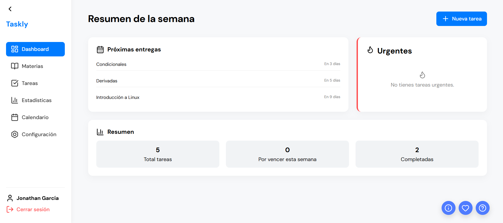

Taskly reúne todo lo que necesitas para gestionar materias, tareas y entregas en un solo lugar.
Crea materias con colores personalizados para identificar rápidamente cada clase.
Agrega tareas, marca las completadas y prioriza las más importantes.
Visualiza todas tus entregas en un calendario claro para planificar tu semana.
Analiza tu progreso y mantente al día con tus tareas académicas.
Recibe notificaciones antes de que tus tareas estén por vencer.
Protege tu cuenta con verificación en dos pasos.
Consulta rápidamente tus próximas entregas, tareas urgentes y progreso semanal desde un solo panel.
